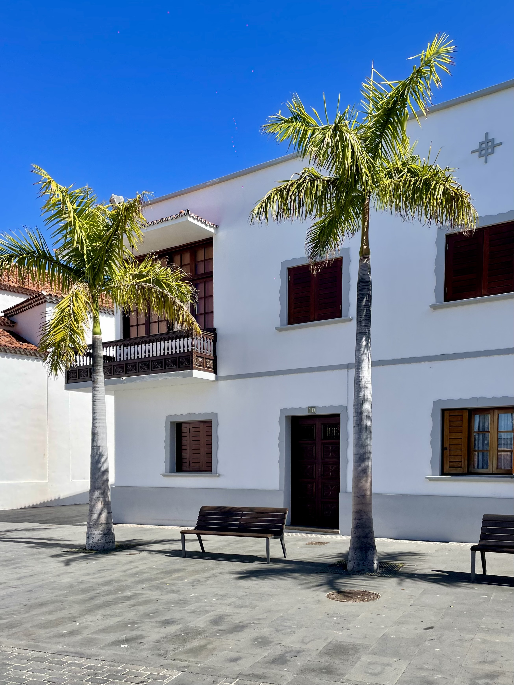
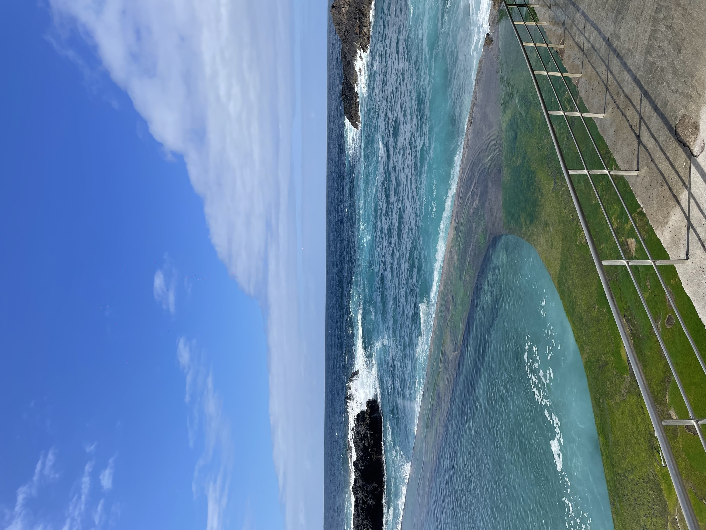

alleine im urlaub
von mara am mittwoch, 25. märz 2026

Ich war ja eigentlich gar nicht alleine. Nur die zweite Woche war ich allein im Paradies und hab gearbeitet. Parallel hat es gestürmt, es war gefährliche Luftqualität und ich erkältet. Manchmal war auch noch die Quallenflagge draußen. Im Airbnb hatte vorher sicher eine Oma gewohnt und ihr Geist ging manchmal noch umher. Das waren insgesamt recht widrige Bedingungen und ich habe es nicht immer geschafft ihnen zu trotzen. Umso schöner war es dann mich auf zu Hause zu freuen. Wie lieb ist es, wenn es einen Ort und Menschen gibt, auf die man sich im Urlaub schon wieder freut.
Tips für Workation: 1. schöne Unterkunft mit vernünftigem Stuhl 2. nicht unbedingt alleine, gerne mit anderen Menschen zusammen 3. kein Sturm und keine Quallen 4. nicht krank sein 5. früh anfangen, dann kann man früh aufhören 6. akzeptieren dass man nicht alles ändern kann 7. jammern ist erlaubt

Dann bin ich zum Abschluss zu meinem Lieblingsort gefahren, habe ein Buch gelesen und Süßigkeiten gegessen und es war toll! Es war gesperrt und zu windig zum schwimmen aber das hat mich gar nicht mehr geärgert. Eines Tages werde ich wieder da sein und die Sonne wird scheinen und ich freue mich jetzt schon.